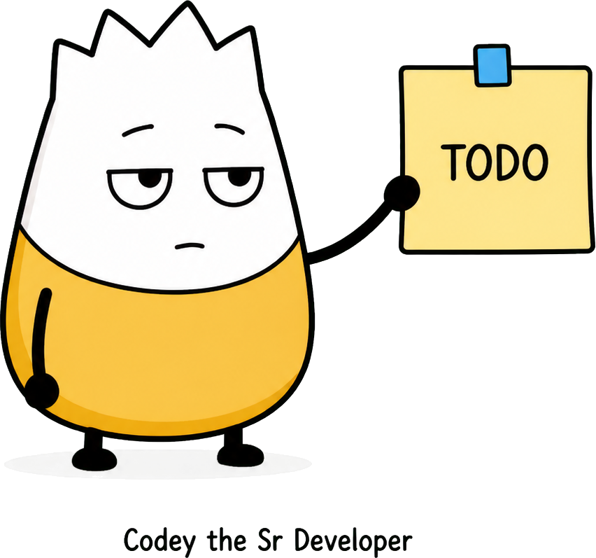

What problem does Terraform solve? start here
Before this project used Terraform, creating the Azure resources for this app meant clicking through the Azure Portal, or running a long list of one-off script commands, by hand. That works, but it's slow, easy to get wrong, and hard to repeat exactly the same way twice — especially months later, or for a teammate who wasn't there the first time.

Terraform lets you describe the cloud infrastructure you want — a database, a web server, a security identity — as plain text files, and then it automates the work of creating, updating, or removing that infrastructure to match what the files say.
This is called “Infrastructure as Code.” The infrastructure itself lives in version-controlled files, the same way application code does, instead of only existing as a set of manual clicks someone remembers making.
- Repeatable. Running the same Terraform files always produces the same result, whether it's the first run or the fiftieth.
- Reviewable. Infrastructure changes go through the same pull-request review as application code, instead of happening silently in a portal.
- Safe to change. Terraform shows you a preview of exactly what it's about to create, change, or delete — before it touches anything.
- Easy to tear down. The same files that built the environment can remove it cleanly when it's no longer needed.
Terraform remembers what it built the shopping list analogy
Think of Terraform like a very detailed shopping list, plus a robot shopper who reads it.

You write down exactly what you want — “one resource group, one database, one web app” — in files. Terraform reads the list, checks what already exists in Azure, and then goes and creates (or fixes, or removes) whatever is different, so reality matches the list. You never have to remember the individual steps yourself; you just keep the list up to date.
After it runs, Terraform saves a record — called state — of everything it created. That's how it knows, the next time it runs, what already exists and what still needs to change. In this project, that record is stored safely in an Azure Storage account instead of on any one person's laptop, so anyone on the team (or the GitHub Actions robot) can run Terraform and get the same, up-to-date picture.
The folder, file by file structure
Every file below lives inside terraform/. None of them do anything by themselves — Terraform reads all the .tf files in the folder together, as one combined description of the infrastructure.
| File / folder | What it's for, in plain terms |
|---|---|
| versions.tf | The label on the toolbox. Says which version of Terraform and which Azure toolkit (“provider”) this project needs, so everyone uses matching tools. (dig deeper) |
| backend.tf | The address label for Terraform's memory. Tells Terraform to keep its record of what it built in a shared Azure location, not just on one laptop. (dig deeper) |
| variables.tf | A fill-in-the-blank form. Lists every piece of information Terraform needs from a person (or from GitHub Actions) before it can run — like the database password or your Azure subscription. (dig deeper) |
| main.tf | The foundation. Creates the resource group — the labeled folder inside Azure that every other resource in this project gets placed into — and a few shared names used everywhere else. (dig deeper) |
| database.tf | Builds the PostgreSQL database server and the empty database inside it, plus the security rules that decide who's allowed to connect. (dig deeper) |
| app_service.tf | Builds the web app that runs the Flask API, and tells it how to connect to the database. (dig deeper) |
| github_oidc.tf | Builds a secure digital ID badge that lets GitHub Actions prove who it is to Azure, so it can deploy the app without ever storing a password. (dig deeper) |
| outputs.tf | The receipt. After everything is built, this prints back the important details — like the app's web address — so people (and GitHub) know where to find things. (dig deeper) |
| bootstrap/main.tf | A separate, one-time setup. Before any of the files above can run, something has to create the safe storage location for Terraform's memory in the first place — that's this file's only job. (dig deeper) |
| terraform.tfvars.example | A blank copy of the fill-in-the-blank form from variables.tf. You copy it to terraform.tfvars and fill in your own answers; it is never committed to Git. |
| backend.hcl.example | A blank copy of the address label for shared memory. Copied to backend.hcl and filled in with the real storage account name. |
| .terraform.lock.hcl | A receipt that pins the exact version of the Azure toolkit that was downloaded, so every run uses the identical version instead of silently drifting over time. |
| scripts/ | Small helper programs — for example, a Python script that loads the starting database tables, and a script that prints the IDs the application deployment needs. |
| tests/ | Automated checks that catch mistakes in the .tf files before they're ever run against real Azure resources. |
| README.md | The instruction manual: the exact commands to run, and in what order, to set this all up. |
A sensible reading order where to start
Terraform doesn't care what order the files are in — it reads them all as one unit. But as a human learning the project, it helps to read them in the order infrastructure actually gets described: setup first, then the foundation, then the resources that sit on top of it, then the receipt at the end.

- versions.tf — what tools this project expects.
- backend.tf — where Terraform keeps its memory.
- variables.tf — what information you need to supply.
- main.tf — the resource group everything else lives inside.
- database.tf — the PostgreSQL server and database.
- app_service.tf — the web app running the API.
- github_oidc.tf — the deployment identity for GitHub Actions.
- outputs.tf — what Terraform reports back when it's done.
- bootstrap/main.tf — the separate one-time setup that comes before all of the above.
How it actually gets run quick preview
Whether it's run from a laptop or from GitHub Actions, Terraform is always driven by the same handful of commands. Each file's tutorial page will refer back to these.
| Command | What it does |
|---|---|
terraform init | Downloads the Azure provider and connects to the shared state storage. (dig deeper) |
terraform fmt | Auto-formats the files so they're easy to read and consistent. (dig deeper) |
terraform validate | Checks the files for syntax and structural mistakes. (dig deeper) |
terraform plan | Previews exactly what would be created, changed, or destroyed — without touching anything yet. (dig deeper) |
terraform apply | Actually creates or updates the Azure resources to match the plan. (dig deeper) |
terraform destroy | Removes everything Terraform created, cleanly. (dig deeper) |
terraform output | Prints the values from outputs.tf after a run. (dig deeper) |
terraform test | Runs this project's automated configuration tests, with no real Azure resources involved. (dig deeper) |
Pick a command to learn go deeper
The table above only glosses over what each command does. Each page below covers one command in detail: what it actually does, where to run it from, what has to be true before you run it, what will be true after it succeeds, and the errors people run into most often.

terraform init
Prepares the working directory: downloads the provider and connects to state.
Command 2 of 8terraform fmt
Rewrites files into consistent, canonical formatting.
Command 3 of 8terraform validate
Checks the configuration for structural mistakes, offline.
Command 4 of 8terraform plan
Previews exactly what would change, before anything happens.
Command 5 of 8terraform apply
Actually creates or updates the real Azure resources.
Command 6 of 8terraform destroy
Removes everything Terraform created, cleanly.
Command 7 of 8terraform output
Reads back the values published in outputs.tf.
Command 8 of 8terraform test
Runs automated checks against a mock provider, no Azure required.
Pick a file to learn go deeper
Each page below covers one file: its purpose, a fuller explanation, the full code, and a breakdown of what each piece means.

versions.tf
Pinning the Terraform and provider versions this project needs.
File 2 of 9backend.tf
Where Terraform stores its memory of what it built.
File 3 of 9variables.tf
The inputs Terraform needs before it can run.
File 4 of 9main.tf
The resource group and shared names everything else builds on.
File 5 of 9database.tf
The PostgreSQL server, database, and firewall rules.
File 6 of 9app_service.tf
The web app that runs the Flask API.
File 7 of 9github_oidc.tf
The secure identity GitHub Actions uses to deploy.
File 8 of 9outputs.tf
What Terraform reports back once it's finished.
File 9 of 9bootstrap/main.tf
The one-time setup that runs before everything else.